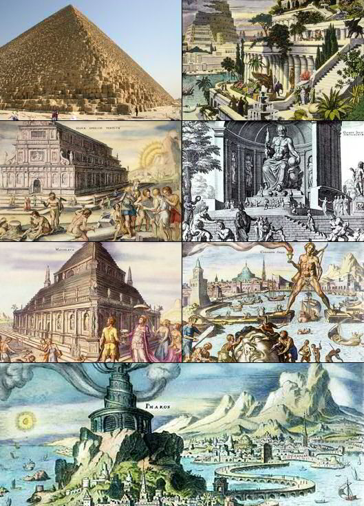

Strona główna
7 cudów świata
Infomacje ogólne
Piramida Cheopsa
Wiszące ogrody Semiramidy
Świątynia Artemidy w Efezie
Posąg Zeusa w Olimpii
Mauzoleum w Halikarnasie
Kolos Rodyjski
Latarnia morska na Faros
Strony zewnętrzne
(Linki otwierają się w nowej karcie)
bryla.pl
plik pdf
sciaga.pl
travelbit.pl
Opinia
Galeria
☰
cud7
7 cudów świata
Strona poświęcona 7 cudom świata antycznego!
